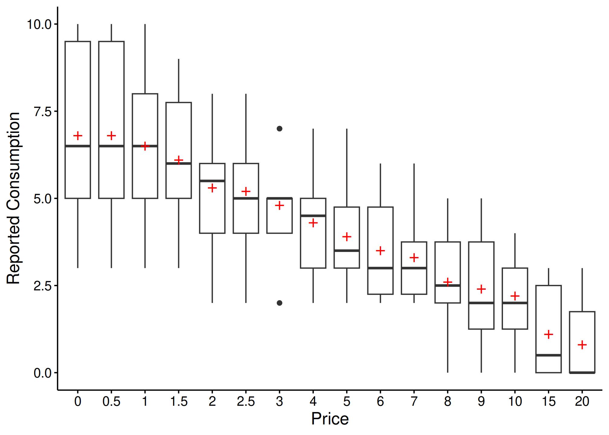
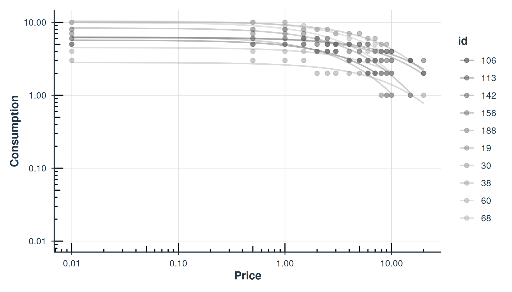
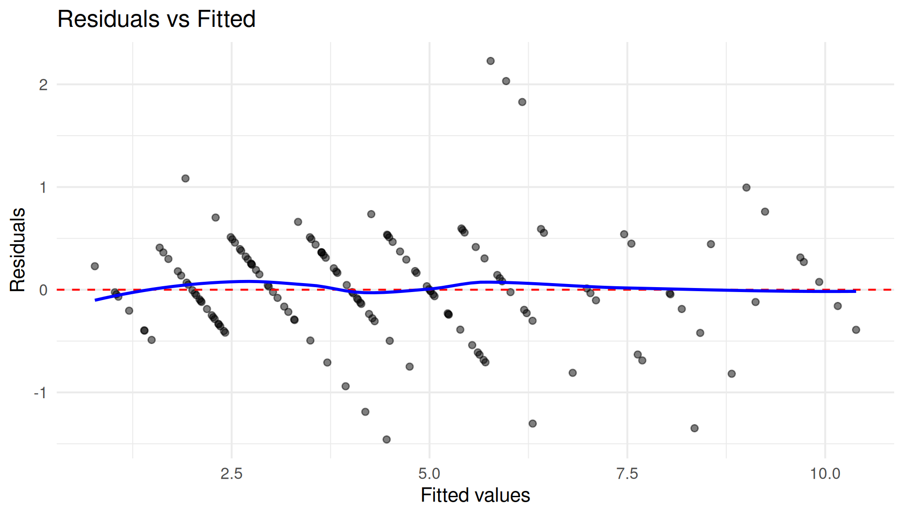

Rationale Behind beezdemand
Behavioral economic demand is gaining in popularity. The motivation
behind beezdemand was to create an alternative tool to
conduct these analyses. This package is not necessarily meant to be a
replacement for other softwares; rather, it is meant to serve as an
additional tool in the behavioral economist’s toolbox. It is meant for
researchers to conduct behavioral economic (be) demand the easy (ez)
way.
Note About Use
beezdemand is under active development but aims to be
stable for typical applied use. If you find issues or would like to
contribute, please open an issue on my GitHub page or email me. Please check
NEWS.md for changes in recent versions.
Installing beezdemand
CRAN Release (recommended method)
The latest stable version of beezdemand can be found on
CRAN and
installed using the following command. The first time you install the
package, you may be asked to select a CRAN mirror. Simply select the
mirror geographically closest to you.
install.packages("beezdemand")
library(beezdemand)GitHub Release
To install a stable release directly from GitHub, first
install and load the devtools package. Then, use
install_github to install the package and associated
vignette. You don’t need to download anything directly from GitHub, as you
should use the following instructions:
install.packages("devtools")
devtools::install_github("brentkaplan/beezdemand", build_vignettes = TRUE)
library(beezdemand)GitHub Development Version
To install the development version of the package, specify the
development branch in install_github:
devtools::install_github("brentkaplan/beezdemand@develop")Using the Package
Example Dataset
An example dataset of responses on an Alcohol Purchase Task is
provided. This object is called apt and is located within
the beezdemand package. These data are a subset from the
paper by Kaplan & Reed (2018). Participants (id) reported the number
of alcoholic drinks (y) they would be willing to purchase and consume at
various prices (x; USD). Note the format of the data, which is called
“long format”. Long format data are data structured such that repeated
observations are stacked in multiple rows, rather than across columns.
First, take a look at an extract of the dataset apt, where
I’ve subsetted rows 1 through 10 and 17 through 26:
| id | x | y | |
|---|---|---|---|
| 1 | 19 | 0.0 | 10 |
| 2 | 19 | 0.5 | 10 |
| 3 | 19 | 1.0 | 10 |
| 4 | 19 | 1.5 | 8 |
| 5 | 19 | 2.0 | 8 |
| 6 | 19 | 2.5 | 8 |
| 7 | 19 | 3.0 | 7 |
| 8 | 19 | 4.0 | 7 |
| 9 | 19 | 5.0 | 7 |
| 10 | 19 | 6.0 | 6 |
| 17 | 30 | 0.0 | 3 |
| 18 | 30 | 0.5 | 3 |
| 19 | 30 | 1.0 | 3 |
| 20 | 30 | 1.5 | 3 |
| 21 | 30 | 2.0 | 2 |
| 22 | 30 | 2.5 | 2 |
| 23 | 30 | 3.0 | 2 |
| 24 | 30 | 4.0 | 2 |
| 25 | 30 | 5.0 | 2 |
| 26 | 30 | 6.0 | 2 |
The first column contains the row number. The second column contains the id number of the series within the dataset. The third column contains the x values (in this specific dataset, price per drink) and the fourth column contains the associated responses (number of alcoholic drinks purchased at each respective price). There are replicates of id because for each series (or participant), several x values were presented.
Converting from Wide to Long and Vice Versa
Take for example the format of most datasets that would be exported from a data collection software such as Qualtrics or SurveyMonkey or Google Forms:
## the following code takes the apt data, which are in long format, and converts
## to a wide format that might be seen from data collection software
wide <- as.data.frame(tidyr::pivot_wider(apt, names_from = x, values_from = y))
colnames(wide) <- c("id", paste0("price_", seq(1, 16, by = 1)))
knitr::kable(
wide[1:5, 1:10],
caption = "Example data in wide format (first 5 participants, first 10 prices)"
)| id | price_1 | price_2 | price_3 | price_4 | price_5 | price_6 | price_7 | price_8 | price_9 |
|---|---|---|---|---|---|---|---|---|---|
| 19 | 10 | 10 | 10 | 8 | 8 | 8 | 7 | 7 | 7 |
| 30 | 3 | 3 | 3 | 3 | 2 | 2 | 2 | 2 | 2 |
| 38 | 4 | 4 | 4 | 4 | 4 | 4 | 4 | 3 | 3 |
| 60 | 10 | 10 | 8 | 8 | 6 | 6 | 5 | 5 | 4 |
| 68 | 10 | 10 | 9 | 9 | 8 | 8 | 7 | 6 | 5 |
A dataset such as this is referred to as “wide format” because each
participant series contains a single row and multiple measurements
within the participant are indicated by the columns. This data format is
fine for some purposes; however, for beezdemand, data are
required to be in “long format” (in the same format as the example data
described earlier). The pivot_demand_data() function makes
this conversion easy.
Quick conversion with pivot_demand_data()
Since our column names (price_1, price_2,
…) don’t encode the actual prices, we supply them via
x_values:
long <- pivot_demand_data(
wide,
format = "long",
x_values = c(0, 0.5, 1, 1.50, 2, 2.50, 3, 4, 5, 6, 7, 8, 9, 10, 15, 20)
)
knitr::kable(
head(long),
caption = "Wide to long conversion using pivot_demand_data()"
)| id | x | y |
|---|---|---|
| 19 | 0.0 | 10 |
| 19 | 0.5 | 10 |
| 19 | 1.0 | 10 |
| 19 | 1.5 | 8 |
| 19 | 2.0 | 8 |
| 19 | 2.5 | 8 |
If your wide data already has numeric column names (e.g.,
"0", "0.5", "1"),
pivot_demand_data() will auto-detect the prices and no
x_values argument is needed. See
?pivot_demand_data for details.
Manual approach with tidyr (click to expand)
For users who want to understand the underlying mechanics, here is
the step-by-step approach using tidyr directly. First,
rename columns to their actual prices:
## make a copy for the manual approach
wide_manual <- wide
newcolnames <- c("id", "0", "0.5", "1", "1.50", "2", "2.50", "3",
"4", "5", "6", "7", "8", "9", "10", "15", "20")
colnames(wide_manual) <- newcolnamesThen pivot to long format, rename columns, and coerce to numeric:
long_manual <- tidyr::pivot_longer(wide_manual, -id,
names_to = "price", values_to = "consumption")
long_manual <- dplyr::arrange(long_manual, id)
colnames(long_manual) <- c("id", "x", "y")
long_manual$x <- as.numeric(long_manual$x)
long_manual$y <- as.numeric(long_manual$y)The dataset is now “tidy” because: (1) each variable forms a column, (2) each observation forms a row, and (3) each type of observational unit forms a table (in this case, our observational unit is the Alcohol Purchase Task data). To learn more about the benefits of tidy data, readers are encouraged to consult Hadley Wikham’s essay on Tidy Data.
Obtain Descriptive Data
Descriptive statistics at each price point can be obtained using
get_descriptive_summary(), which returns an S3 object with
print(), summary(), and plot()
methods. The legacy GetDescriptives() is also available for
backward compatibility.
desc <- get_descriptive_summary(apt)
knitr::kable(
desc$statistics,
caption = "Descriptive statistics by price point",
digits = 2
)| Price | Mean | Median | SD | PropZeros | NAs | Min | Max |
|---|---|---|---|---|---|---|---|
| 0 | 6.8 | 6.5 | 2.62 | 0.0 | 0 | 3 | 10 |
| 0.5 | 6.8 | 6.5 | 2.62 | 0.0 | 0 | 3 | 10 |
| 1 | 6.5 | 6.5 | 2.27 | 0.0 | 0 | 3 | 10 |
| 1.5 | 6.1 | 6.0 | 1.91 | 0.0 | 0 | 3 | 9 |
| 2 | 5.3 | 5.5 | 1.89 | 0.0 | 0 | 2 | 8 |
| 2.5 | 5.2 | 5.0 | 1.87 | 0.0 | 0 | 2 | 8 |
| 3 | 4.8 | 5.0 | 1.48 | 0.0 | 0 | 2 | 7 |
| 4 | 4.3 | 4.5 | 1.57 | 0.0 | 0 | 2 | 7 |
| 5 | 3.9 | 3.5 | 1.45 | 0.0 | 0 | 2 | 7 |
| 6 | 3.5 | 3.0 | 1.43 | 0.0 | 0 | 2 | 6 |
| 7 | 3.3 | 3.0 | 1.34 | 0.0 | 0 | 2 | 6 |
| 8 | 2.6 | 2.5 | 1.51 | 0.1 | 0 | 0 | 5 |
| 9 | 2.4 | 2.0 | 1.58 | 0.1 | 0 | 0 | 5 |
| 10 | 2.2 | 2.0 | 1.32 | 0.1 | 0 | 0 | 4 |
| 15 | 1.1 | 0.5 | 1.37 | 0.5 | 0 | 0 | 3 |
| 20 | 0.8 | 0.0 | 1.14 | 0.6 | 0 | 0 | 3 |
The plot() method creates a box-and-whisker plot with
mean values shown as red crosses:
plot(desc)
Change Data
There are certain instances in which data are to be modified before fitting, for example when using an equation that logarithmically transforms y values. The following function can help with modifying data:
nreplindicates number of replacement 0 values, either as an integer or"all". If this value is an integer,n, then the firstn0s will be replacedreplnumindicates the number that should replace 0 valuesrem0removes all zerosremq0eremoves y value where x (or price) equals 0replfreereplaces where x (or price) equals 0 with a specified number
ChangeData(apt, nrepl = 1, replnum = 0.01, rem0 = FALSE, remq0e = FALSE, replfree = NULL)Identify Unsystematic Responses
Use check_systematic_demand() to examine the consistency
of purchase task data using Stein et al.’s (2015) algorithm for
identifying unsystematic responses. Default values are shown, but they
can be customized.
check_systematic_demand(
data = apt,
trend_threshold = 0.025,
bounce_threshold = 0.1,
max_reversals = 0,
consecutive_zeros = 2
)| id | type | trend_stat | trend_threshold | trend_direction | trend_pass | bounce_stat | bounce_threshold | bounce_direction | bounce_pass | reversals | reversals_pass | returns | n_positive | systematic |
|---|---|---|---|---|---|---|---|---|---|---|---|---|---|---|
| 19 | demand | 0.2112 | 0.025 | down | TRUE | 0 | 0.1 | none | TRUE | 0 | TRUE | NA | 16 | TRUE |
| 30 | demand | 0.1437 | 0.025 | down | TRUE | 0 | 0.1 | none | TRUE | 0 | TRUE | NA | 16 | TRUE |
| 38 | demand | 0.7885 | 0.025 | down | TRUE | 0 | 0.1 | none | TRUE | 0 | TRUE | NA | 14 | TRUE |
| 60 | demand | 0.9089 | 0.025 | down | TRUE | 0 | 0.1 | none | TRUE | 0 | TRUE | NA | 14 | TRUE |
| 68 | demand | 0.9089 | 0.025 | down | TRUE | 0 | 0.1 | none | TRUE | 0 | TRUE | NA | 14 | TRUE |
Analyze Demand Data
Results of the analysis return both empirical and derived measures
for use in additional analyses and model specification. Equations
include the linear model, exponential model, exponentiated model, and
simplified exponential model (Rzeszutek et al., 2025).
beezdemand also supports mixed-effects and hurdle demand
models (see the dedicated vignettes for those workflows).
Obtaining Empirical Measures
Empirical measures can be obtained separately on their own. The
modern get_empirical_measures() returns a tibble with
consistent column naming; the legacy GetEmpirical() is also
available:
| id | Intensity | BP0 | BP1 | Omaxe | Pmaxe |
|---|---|---|---|---|---|
| 19 | 10 | NA | 20 | 45 | 15 |
| 30 | 3 | NA | 20 | 20 | 20 |
| 38 | 4 | 15 | 10 | 21 | 7 |
| 60 | 10 | 15 | 10 | 24 | 8 |
| 68 | 10 | 15 | 10 | 36 | 9 |
Obtaining Derived Measures
Starting with beezdemand version 0.2.0, the
recommended interface for fitting demand curves is
fit_demand_fixed(). It returns a structured S3 object with
consistent methods like summary(), tidy(),
glance(), predict(), confint(),
augment(), and plot().
Key arguments:
equationcan be"linear","hs","koff", or"simplified"(Hursh & Silberberg, 2008; Koffarnus et al., 2015; Rzeszutek et al., 2025).kcan be a fixed numeric value (e.g.,2) or one of the helper modes:"ind","fit", or"share".agg = NULLfits per-subject curves. Useagg = "Mean"oragg = "Pooled"for group-level curves.param_spacecontrols whether optimization happens on the natural scale or log10 scale (see?fit_demand_fixed).
Note: Fitting with an equation (e.g., "linear",
"hs") that doesn’t work happily with zero consumption
values results in the following. One, a message will appear saying that
zeros are incompatible with the equation. Two, because zeros are removed
prior to finding empirical (i.e., observed) measures, resulting BP0
values will be all NAs (reflective of the data transformations). The
warning message will look as follows:
The simplest use of fit_demand_fixed() is shown here.
This example fits the exponential equation proposed by Hursh &
Silberberg (2008):
fit_demand_fixed(data = apt, equation = "hs", k = 2)| id | term | estimate | std.error | statistic | p.value | component | estimate_scale | term_display | estimate_internal |
|---|---|---|---|---|---|---|---|---|---|
| 19 | Q0 | 10.158665 | 0.2685323 | NA | NA | fixed | natural | Q0 | 10.158665 |
| 30 | Q0 | 2.807366 | 0.2257764 | NA | NA | fixed | natural | Q0 | 2.807366 |
| 38 | Q0 | 4.497456 | 0.2146862 | NA | NA | fixed | natural | Q0 | 4.497456 |
| 60 | Q0 | 9.924274 | 0.4591683 | NA | NA | fixed | natural | Q0 | 9.924274 |
| 68 | Q0 | 10.390384 | 0.3290277 | NA | NA | fixed | natural | Q0 | 10.390384 |
| 106 | Q0 | 5.683566 | 0.3002817 | NA | NA | fixed | natural | Q0 | 5.683566 |
| 113 | Q0 | 6.195949 | 0.1744096 | NA | NA | fixed | natural | Q0 | 6.195949 |
| 142 | Q0 | 6.171990 | 0.6408575 | NA | NA | fixed | natural | Q0 | 6.171990 |
| 156 | Q0 | 8.348973 | 0.4105617 | NA | NA | fixed | natural | Q0 | 8.348973 |
| 188 | Q0 | 6.303639 | 0.5636959 | NA | NA | fixed | natural | Q0 | 6.303639 |
| model_class | backend | equation | k_spec | nobs | n_subjects | n_success | n_fail | converged | logLik | AIC | BIC |
|---|---|---|---|---|---|---|---|---|---|---|---|
| beezdemand_fixed | legacy | hs | fixed (2) | 146 | 10 | 10 | 0 | NA | NA | NA | NA |
| id | term | estimate | conf.low | conf.high | level |
|---|---|---|---|---|---|
| 19 | Q0 | 10.158665 | 9.632351 | 10.684978 | 0.95 |
| 30 | Q0 | 2.807366 | 2.364853 | 3.249880 | 0.95 |
| 38 | Q0 | 4.497456 | 4.076679 | 4.918233 | 0.95 |
| 60 | Q0 | 9.924274 | 9.024320 | 10.824227 | 0.95 |
| 68 | Q0 | 10.390384 | 9.745502 | 11.035267 | 0.95 |
| 106 | Q0 | 5.683566 | 5.095025 | 6.272107 | 0.95 |
| 113 | Q0 | 6.195949 | 5.854112 | 6.537785 | 0.95 |
| 142 | Q0 | 6.171990 | 4.915932 | 7.428047 | 0.95 |
| 156 | Q0 | 8.348973 | 7.544287 | 9.153660 | 0.95 |
| 188 | Q0 | 6.303639 | 5.198816 | 7.408463 | 0.95 |
| id | x | y | k | .fitted | .resid |
|---|---|---|---|---|---|
| 19 | 0.0 | 10 | 2 | 10.158665 | -0.1586645 |
| 19 | 0.5 | 10 | 2 | 9.685985 | 0.3140150 |
| 19 | 1.0 | 10 | 2 | 9.239853 | 0.7601470 |
| 19 | 1.5 | 8 | 2 | 8.818571 | -0.8185709 |
| 19 | 2.0 | 8 | 2 | 8.420561 | -0.4205615 |
| 19 | 2.5 | 8 | 2 | 8.044358 | -0.0443584 |
| 19 | 3.0 | 7 | 2 | 7.688598 | -0.6885978 |
| 19 | 4.0 | 7 | 2 | 7.033415 | -0.0334151 |
| 19 | 5.0 | 7 | 2 | 6.445871 | 0.5541287 |
| 19 | 6.0 | 6 | 2 | 5.918026 | 0.0819737 |
hs_diag
#>
#> Model Diagnostics
#> ==================================================
#> Model class: beezdemand_fixed
#>
#> Convergence:
#> Status: Converged
#>
#> Residuals:
#> Mean: 0.0284
#> SD: 0.5306
#> Range: [-1.458, 2.228]
#> Outliers: 3 observations
#>
#> --------------------------------------------------
#> Issues Detected (1):
#> 1. Detected 3 potential outliers across subjects
plot(fit_hs)
plot_residuals(fit_hs)$fitted
Normalized Alpha (\alpha^*)
When k varies across participants or studies, raw \alpha values are not directly comparable.
The alpha_star column in tidy() output
provides a normalized version (Strategy B; Rzeszutek et al., 2025) that
adjusts for the scaling constant:
\alpha^* = \frac{-\alpha}{\ln\!\left(1 - \frac{1}{k \cdot \ln(b)}\right)}
where b is the logarithmic base (10
for HS/Koff equations). Standard errors are computed via the delta
method. alpha_star requires k
\cdot \ln(b) > 1; otherwise NA is returned.
## alpha_star is included in tidy() output for HS and Koff equations
hs_tidy[hs_tidy$term == "alpha_star", c("id", "term", "estimate", "std.error")]
#> # A tibble: 10 × 4
#> id term estimate std.error
#> <chr> <chr> <dbl> <dbl>
#> 1 19 alpha_star 0.00836 0.000249
#> 2 30 alpha_star 0.0240 0.00276
#> 3 38 alpha_star 0.0172 0.00146
#> 4 60 alpha_star 0.0176 0.000592
#> 5 68 alpha_star 0.0113 0.000394
#> 6 106 alpha_star 0.0257 0.00176
#> 7 113 alpha_star 0.00812 0.000447
#> 8 142 alpha_star 0.00969 0.00163
#> 9 156 alpha_star 0.0193 0.000668
#> 10 188 alpha_star 0.0321 0.00184Here is the same idea specifying the "koff" equation
(Koffarnus et al., 2015):
fit_demand_fixed(data = apt, equation = "koff", k = 2)The "simplified" equation (Rzeszutek et al., 2025), also
known as the Simplified Exponential with Normalized Decay (SND), handles
zeros natively without requiring data transformation and does not
require a k parameter:
fit_demand_fixed(data = apt, equation = "simplified")For a more detailed treatment of the simplified equation, see
vignette("fixed-demand").
By specifying agg = "Mean", y values at each x value are
aggregated and a single curve is fit to the data (disregarding error
around each averaged point):
fit_demand_fixed(data = apt, equation = "hs", k = 2, agg = "Mean")By specifying agg = "Pooled", y values at each x value
are aggregated and a single curve is fit to the data and error around
each averaged point (but disregarding within-subject clustering):
fit_demand_fixed(data = apt, equation = "hs", k = 2, agg = "Pooled")Share k Globally; Fit Other Parameters Locally
As mentioned earlier, in fit_demand_fixed(), when
k = "share" this parameter will be a shared parameter
across all datasets (globally) while estimating Q_0 and \alpha locally. While this works, it may take
some time with larger sample sizes.
fit_demand_fixed(data = apt, equation = "hs", k = "share")| id | term | estimate | std.error | statistic | p.value | component | estimate_scale | term_display | estimate_internal |
|---|---|---|---|---|---|---|---|---|---|
| 19 | Q0 | 10.014576 | 0.2429150 | NA | NA | fixed | natural | Q0 | 10.014576 |
| 30 | Q0 | 2.766313 | 0.2192797 | NA | NA | fixed | natural | Q0 | 2.766313 |
| 38 | Q0 | 4.485810 | 0.2074990 | NA | NA | fixed | natural | Q0 | 4.485810 |
| 60 | Q0 | 9.721379 | 0.4371060 | NA | NA | fixed | natural | Q0 | 9.721379 |
| 68 | Q0 | 10.293139 | 0.3179671 | NA | NA | fixed | natural | Q0 | 10.293139 |
| 106 | Q0 | 5.654329 | 0.2826797 | NA | NA | fixed | natural | Q0 | 5.654329 |
| 113 | Q0 | 6.169268 | 0.1640778 | NA | NA | fixed | natural | Q0 | 6.169268 |
| 142 | Q0 | 6.052017 | 0.6238319 | NA | NA | fixed | natural | Q0 | 6.052017 |
| 156 | Q0 | 8.136417 | 0.3523684 | NA | NA | fixed | natural | Q0 | 8.136417 |
| 188 | Q0 | 6.208328 | 0.4920853 | NA | NA | fixed | natural | Q0 | 6.208328 |
| model_class | backend | equation | k_spec | nobs | n_subjects | n_success | n_fail | converged | logLik | AIC | BIC |
|---|---|---|---|---|---|---|---|---|---|---|---|
| beezdemand_fixed | legacy | hs | share | 146 | 10 | 10 | 0 | NA | NA | NA | NA |
Next Steps
Now that you are familiar with the basics, explore the other vignettes for more advanced workflows:
-
vignette("model-selection")– Choosing the right model class for your data -
vignette("fixed-demand")– In-depth fixed-effect demand modeling -
vignette("group-comparisons")– Extra sum-of-squares F-test for group comparisons -
vignette("mixed-demand")– Mixed-effects nonlinear demand models (NLME) -
vignette("mixed-demand-advanced")– Advanced mixed-effects topics (factors, EMMs, covariates) -
vignette("hurdle-demand-models")– Two-part hurdle models via TMB -
vignette("cross-price-models")– Cross-price demand analysis -
vignette("migration-guide")– Migrating fromFitCurves()tofit_demand_fixed()
Free beezdemand Alternative with Graphical User
Interface
If you are interested in using open source software for analyzing
demand curve data but don’t know R, please check out shinybeez, a free
open source Shiny app for demand curve analysis (see the companion
article here).
Acknowledgments
Shawn P. Gilroy, Contributor GitHub
Derek D. Reed, Applied Behavioral Economics Laboratory
Mikhail N. Koffarnus, Addiction Recovery Research Center
Steven R. Hursh, Institutes for Behavior Resources, Inc.
Paul E. Johnson, Center for Research Methods and Data Analysis, University of Kansas
Peter G. Roma, Institutes for Behavior Resources, Inc.
W. Brady DeHart, Addiction Recovery Research Center
Michael Amlung, Cognitive Neuroscience of Addictions Laboratory
Recommended Readings
Reed, D. D., Niileksela, C. R., & Kaplan, B. A. (2013). Behavioral economics: A tutorial for behavior analysts in practice. Behavior Analysis in Practice, 6 (1), 34–54. https://doi.org/10.1007/BF03391790
Reed, D. D., Kaplan, B. A., & Becirevic, A. (2015). Basic research on the behavioral economics of reinforcer value. In Autism Service Delivery (pp. 279-306). Springer New York. https://doi.org/10.1007/978-1-4939-2656-5_10
Hursh, S. R., & Silberberg, A. (2008). Economic demand and essential value. Psychological Review, 115 (1), 186-198. https://dx.doi.org/10.1037/0033-295X.115.1.186
Koffarnus, M. N., Franck, C. T., Stein, J. S., & Bickel, W. K. (2015). A modified exponential behavioral economic demand model to better describe consumption data. Experimental and Clinical Psychopharmacology, 23 (6), 504-512. https://dx.doi.org/10.1037/pha0000045
Stein, J. S., Koffarnus, M. N., Snider, S. E., Quisenberry, A. J., & Bickel, W. K. (2015). Identification and management of nonsystematic purchase task data: Toward best practice. Experimental and Clinical Psychopharmacology 23 (5), 377-386. https://dx.doi.org/10.1037/pha0000020
Hursh, S. R., Raslear, T. G., Shurtleff, D., Bauman, R., & Simmons, L. (1988). A cost‐benefit analysis of demand for food. Journal of the Experimental Analysis of Behavior, 50 (3), 419-440. https://doi.org/10.1901/jeab.1988.50-419
Kaplan, B. A., Franck, C. T., McKee, K., Gilroy, S. P., & Koffarnus, M. N. (2021). Applying mixed-effects modeling to behavioral economic demand: An introduction. Perspectives on Behavior Science, 44 (2), 333–358. https://doi.org/10.1007/s40614-021-00299-7
Koffarnus, M. N., Kaplan, B. A., Franck, C. T., Rzeszutek, M. J., & Traxler, H. K. (2022). Behavioral economic demand modeling chronology, complexities, and considerations: Much ado about zeros. Behavioural Processes, 199, 104646. https://doi.org/10.1016/j.beproc.2022.104646
Reed, D. D., Kaplan, B. A., & Gilroy, S. P. (2025). Handbook of Operant Behavioral Economics: Demand, Discounting, Methods, and Applications (1st ed.). Academic Press. https://shop.elsevier.com/books/handbook-of-operant-behavioral-economics/reed/978-0-323-95745-8
Kaplan, B. A. (2025). Quantitative models of operant demand. In D. D. Reed, B. A. Kaplan, & S. P. Gilroy (Eds.), Handbook of Operant Behavioral Economics: Demand, Discounting, Methods, and Applications (1st ed.). Academic Press. https://shop.elsevier.com/books/handbook-of-operant-behavioral-economics/reed/978-0-323-95745-8
Kaplan, B. A., & Reed, D. D. (2025). shinybeez: A Shiny app for behavioral economic easy demand and discounting. Journal of the Experimental Analysis of Behavior. https://doi.org/10.1002/jeab.70000
Rzeszutek, M. J., Regnier, S. D., Franck, C. T., & Koffarnus, M. N. (2025). Overviewing the exponential model of demand and introducing a simplification that solves issues of span, scale, and zeros. Experimental and Clinical Psychopharmacology.
Rzeszutek, M. J., Regnier, S. D., Kaplan, B. A., Traxler, H. K., Stein, J. S., Tomlinson, D., & Koffarnus, M. N. (2025). Identification and management of nonsystematic cross-commodity data: Toward best practice. Experimental and Clinical Psychopharmacology. In press.